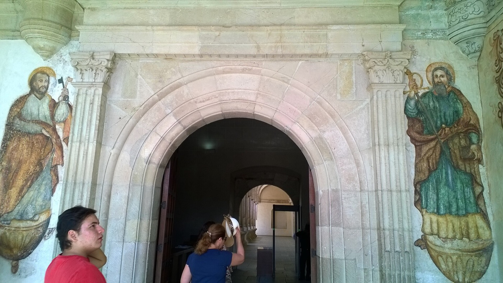
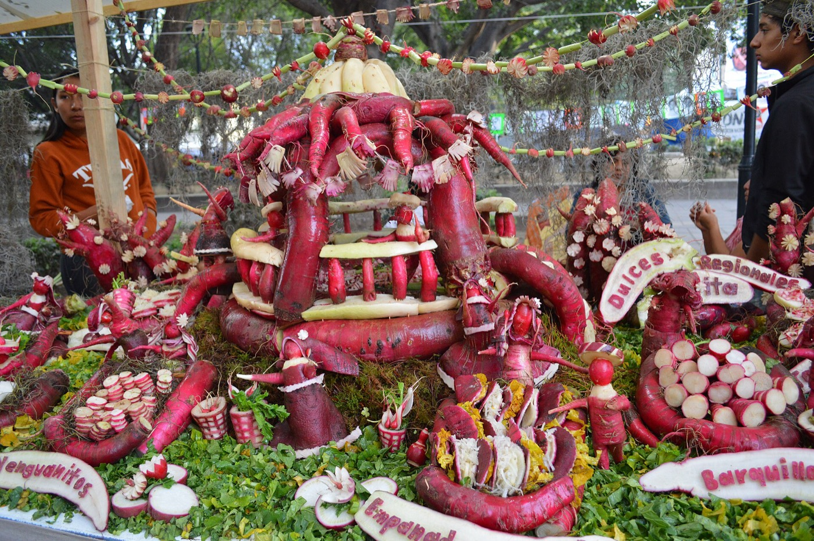
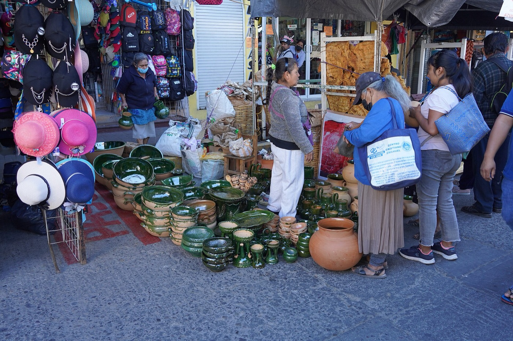
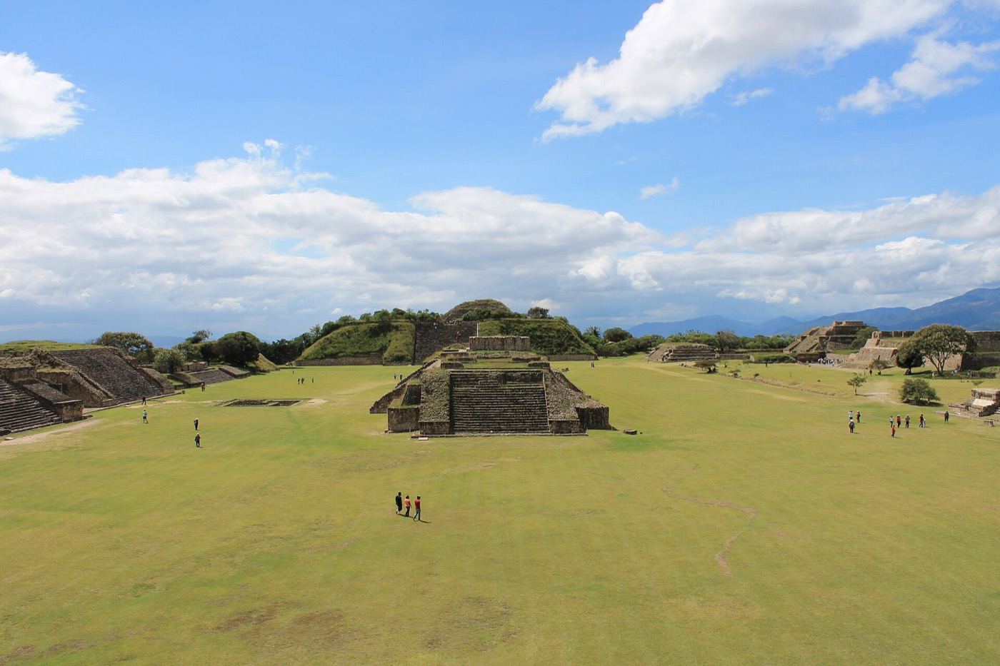
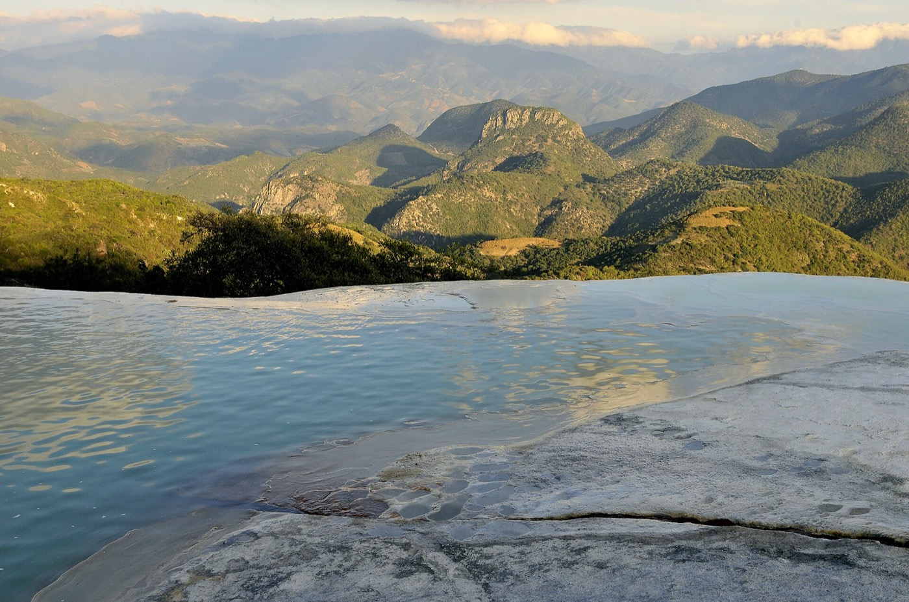
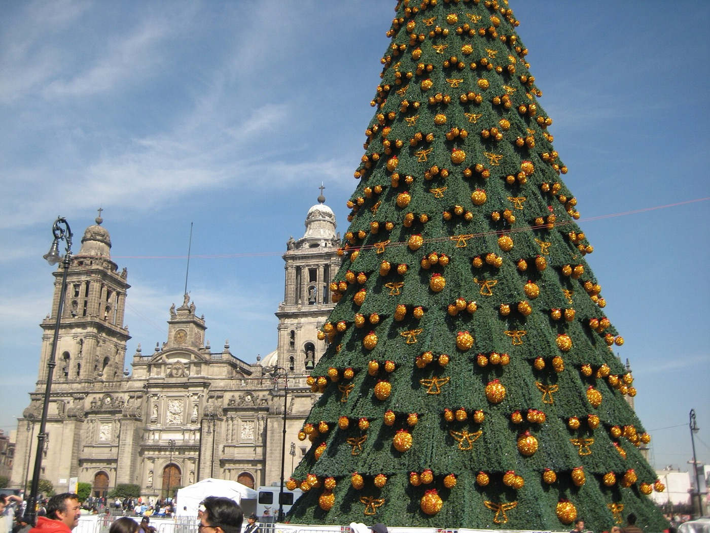
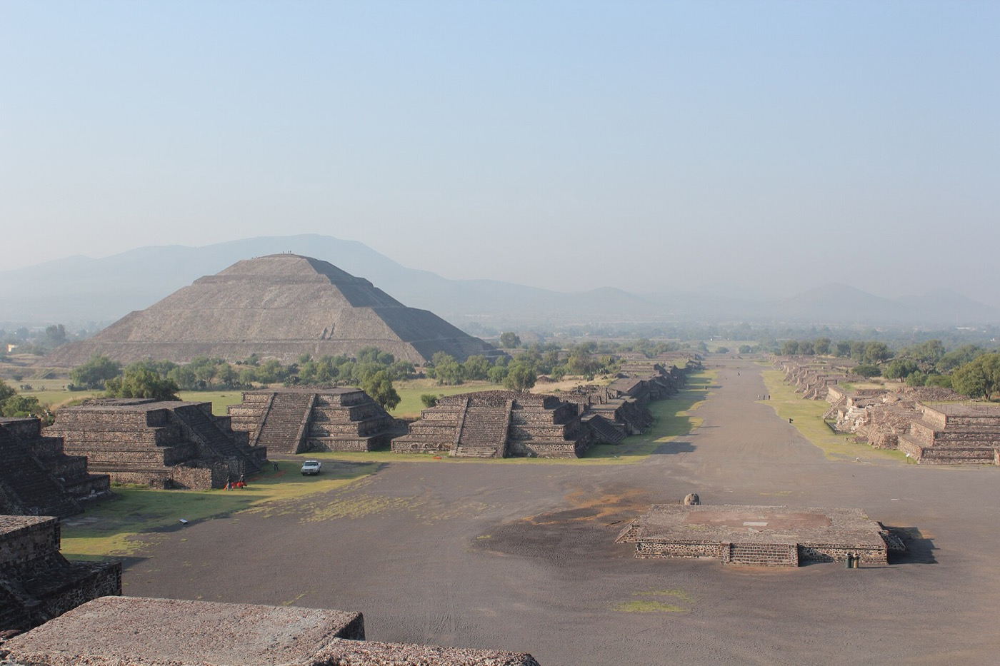
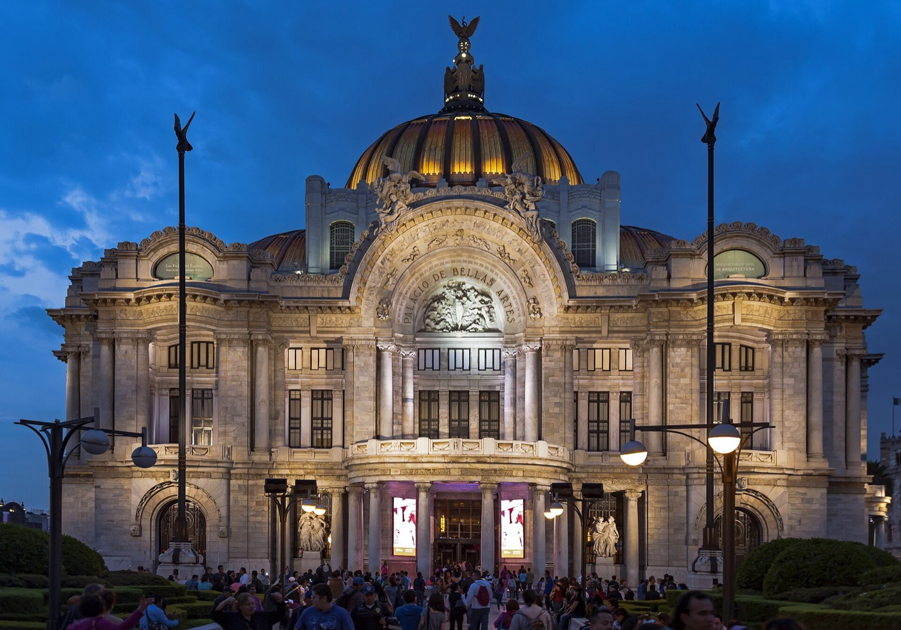
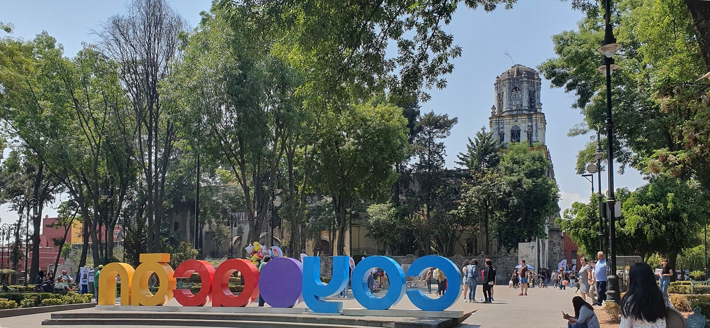
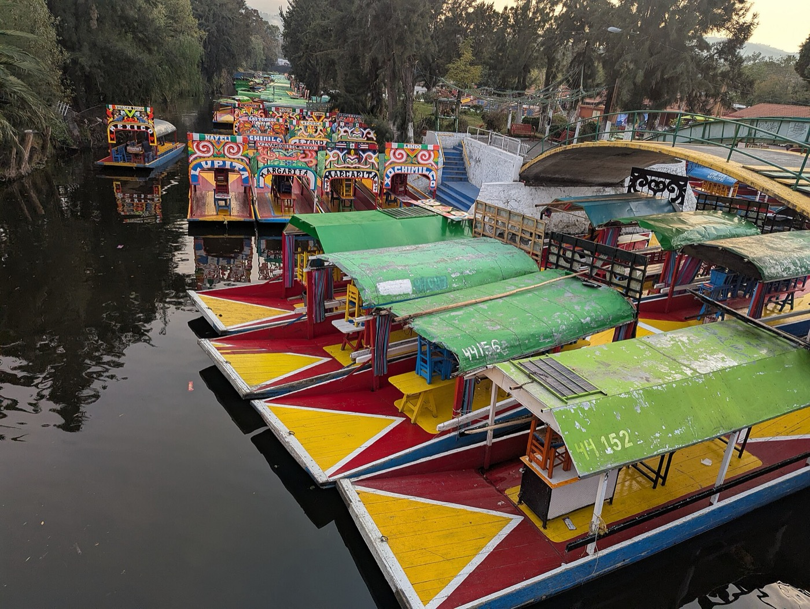

Winter break 2026-27 · Oaxaca and Mexico City · three travelers
Friday December 18 to Monday January 4. Eight nights in Oaxaca for the Night of the Radishes, the valley markets and Christmas Eve on the Zocalo, then eight nights in Mexico City for New Year, a balloon over Teotihuacan and the canals at Xochimilco. Two cities, no long drives, no jet lag.
Why this trip. The Morocco plan for the same dates came to $16,500 to $22,000, with $7,000 of it in Christmas airfares. Mexico City is a four-hour nonstop at a third of the fare, Christmas is Oaxaca's best week, and the February shortlist already had this pair at number two. Morocco keeps for a non-holiday window.
Decisions so far. Two cities only, Oaxaca first. Monarch butterflies priced as an option (two nights in Valle de Bravo, 2.5 hours each way) and left out of the base plan. Separate rooms where the hotel allows. Nothing is booked; Christmas week in Oaxaca and New Year week in Mexico City both show most hotels sold out or not loaded, so the hotel emails are the first job.
Fly in and out of Mexico City; one hop each way to Oaxaca
Fri Dec 18 · airport hotel
SFO → Mexico City
United nonstop SFO 13:14 → Mexico City 19:35, 4 h 20 m. Immigration can take an hour in December. Walkway to the Camino Real at Terminal 1, dinner at the hotel, bed. Mexico is two hours ahead of home, so no jet lag to speak of.
Sat Dec 19 – Sat Dec 26 · 8 nights · Christmas

Mexico City → Oaxaca
AeroTren to Terminal 2, Aeromexico 10:35 → Oaxaca 11:52. Official airport taxi to the Centro (30 min). Lunch, then the Zocalo and the Alameda as the posada season fills them, Santo Domingo's green stone in the last light about 17:30, and an early dinner.
Backup Late Aeromexico: take the 14:50 and make the evening the first walk; nothing is booked.
Oaxaca
Driver 40 minutes east for the Sunday market, the busiest Sunday of the year, best 09:00 to 11:00: tarp-covered streets, pottery, chapulines, barbacoa smoke, the women's velvet blouses. Lunch at the market (the vegetarian's dishes are named under Where to eat). Teotitlan del Valle weavers on the way back if energy allows. If the radish harvest for the Noche de Rabanos repeats its 2025 dawn (Dec 20, 06:45), it is a photograph worth the early start before the market.
Backup Rain is rare in December. If Tlacolula feels like too much on day two, the city markets at 08:00 and Santo Domingo at 17:30 are the day.
Oaxaca
Taxi up for the 08:00 opening (the shuttle bus starts at 08:30, too late for the light) for empty plazas and low side light; no tripods inside, under-13s free. Back in town for a late breakfast, the Textile Museum, rest. Blue hour on Macedonio Alcala, the pedestrian street, as the lights come on; the convite parade for the Rabanos runs one of these evenings, Dec 21 or 22.
Backup Monte Alban is open every day; if the gate queue is long, walk the north platform first and the Gran Plaza after 10:00.
Oaxaca
Mercado 20 de Noviembre at 07:30: hot chocolate and pan de yema at the counters, the smoke hall, memelas sin asiento. Casa Crespo cooking class late morning (vegetarian menu on request, children welcome, about $99 a head). Afternoon off. Evening posada processions in the barrios.
Backup Cooking class full: the Textile Museum and the ethnobotanical garden tour (English tours on fixed days, book) are the indoor half-day.
Oaxaca
Etla's Wednesday market at 08:00 (20 minutes), back by 10:30. The carvers work in the open on the Zocalo from about 10:00 to 14:00, which is the photograph; the finished tableaux are on view 15:00 to 21:00, free, with lines of three hours after dark, so walk the stands at 15:00 and skip the queue. Early dinner or the Zocalo stalls; bunuelos on a clay plate you smash for luck.
Backup If the carvers finish early, the 15:00 opening is the moment; the lines are three hours by 19:00. The dinner is a reservation at 18:00 or stall food, not a 20:00 table.
Oaxaca
Zaachila's Thursday market, or Teotitlan and Mitla, back by mid-afternoon. In the evening the calendas: each parish parades with giant puppets, brass bands and lanterns and converges on the Zocalo before midnight mass. Christmas Eve dinner booked in advance.
Backup Zaachila market is small on Christmas Eve; Teotitlan del Valle weavers and Mitla (40 min) are the alternative, back by 16:00 for the calendas.
Oaxaca
A quiet city. Boulenc for a late breakfast, the Pochote organic market if it runs, then 30 minutes to San Martin Tilcajete: the Jacobo y Maria Angeles alebrije workshop is free and open every day of the year, and Almu next door does lunch. Back for a slow evening.
Backup Almu or the Tilcajete workshop shut for the holiday: Ancestral Cocina Tradicional in the Xochimilco barrio opens at 14:00 every day; otherwise the hotel courtyard and a book.
Oaxaca
Private car 1.5 hours to Hierve el Agua at opening for the petrified falls and the pools in morning light (low water in December, cash entry about MXN 150 all-in), Mitla's stone mosaics on the way back, Teotitlan if not yet done. If Hierve is closed by its land dispute, San Bartolo Coyotepec black pottery and Ocotlan instead.
Backup Hierve el Agua closes without notice when the two villages argue; check the day before. Fallback: Tilcajete alebrijes and San Bartolo Coyotepec black pottery, 30 minutes each.




Sun Dec 27 – Sun Jan 3 · 8 nights · New Year

Oaxaca → Mexico City
Aeromexico 12:35 → Mexico City 13:50, taxi to Roma Norte by 15:00. Parque Mexico and the Condesa streets on foot, dinner near the hotel.
Backup Flight delayed: Roma Norte at any hour is fine; dinner is a walk-in.
Mexico City
Pickup about 05:00 at the Angel (the Kukun hotel is beside it), launch at first light (sunrise 07:08), an hour aloft over the pyramids, then into the site at the 08:00 opening; the Sun pyramid cannot be climbed and the Moon only to its first tier. About MXN 2,900 a head shared or 3,600 private. Monday closes every museum in the city, which is why this is the day. Late lunch, rest.
Backup Balloons cancel in wind or fog and rebook; if cancelled, enter the site at 08:00 anyway (the Terminal del Norte bus is MXN 60) and move the balloon to Jan 2 in place of Xochimilco.
Mexico City
Zocalo at dawn with the Christmas lights still up, Templo Mayor, the Diego Rivera murals in the Palacio Nacional (bring passports), Palacio Postal, lunch in the Centro, Bellas Artes murals in the afternoon, Sanborns' tiled house for a merienda.
Backup Ozone contingency days close nothing, but the haze flattens skyline shots; stay at street level in the Centro.
Mexico City
Frida Kahlo museum with tickets bought weeks ahead, the Coyoacan market for tostadas, the plazas and the Leon Trotsky house. Evening Ballet Folklorico at Bellas Artes (Wednesday performance) if tickets are on sale.
Backup Frida tickets gone: Anahuacalli (Diego's lava-stone museum, same ticket family) or the Leon Trotsky house five blocks away, both quieter.
Mexico City
Mercado de Jamaica flower market at first light, then a slow day in Roma and Condesa. Casa Azul runs 10:00 to 14:00 today if Wednesday's tickets failed. The city's party is a free all-ages DJ night at the Angel de la Independencia from 18:00 (the Zocalo goes dark Dec 31); the family version is the booked dinner and a walk to the Angel for an hour.
Backup No reservation: Mercado Medellin at 13:00 for a long lunch and a quiet evening in; the Angel party is loud and runs to 02:00.
Mexico City
Everything official is shut and the city declares a few-hour smog alert most New Year mornings from the fireworks, so no dawn shoot. Sleep in, Chapultepec park and the lake, a late lunch at one of the places that opens Jan 1 (listed), early night.
Backup Everything official is shut; Chapultepec park, the Condesa parks and a late lunch are the day. Castle and museums reopen Jan 2.
Mexico City
Trajinera from the Cuemanco pier by 09:30, before the holiday crowds (MXN 750 a boat an hour, food aboard). Afternoon Bazar Sabado in San Angel and the Rivera and Kahlo studio house.
Backup Trajineras are packed on holiday weekends after noon; be at Cuemanco by 09:30 or switch to the Sunday morning.
Mexico City
National Museum of Anthropology at the 09:00 opening (the sun stone, the Oaxaca rooms as a coda), Lagunilla antiques market midday, and the Sunday family show at Arena Mexico at 17:00 for Zoe (tickets MXN 80 to 500, buy in December). Last dinner.
Backup Arena Mexico Sunday show sells out; buy tickets online in December. Lagunilla is Sunday-only and best 10:00 to 13:00.




Mon Jan 4
Mexico City → SFO
Churros and chocolate at El Moro, a last walk, taxi to the airport by 15:00. United 18:10 → SFO 21:02.
United nonstop round trip plus two Aeromexico hops, bought separately
| Leg | Airline | Day | Times | Per person | Note |
|---|---|---|---|---|---|
| SFO → Mexico City | United | Fri Dec 18 | 13:14 → 19:35 | $1,521 round trip | Nonstop 4 h 20 m; Zoe misses the half day, or take the 22:48 red-eye |
| Mexico City → Oaxaca | Aeromexico | Sat Dec 19 | 10:35 → 11:52 | $184 | Terminal 2; Light fare is carry-on only, add a bag |
| Oaxaca → Mexico City | Aeromexico | Sun Dec 27 | 12:35 → 13:50 | $202 | Viva 12:49 is $112 with less reliability |
| Mexico City → SFO | United | Mon Jan 4 | 18:10 → 21:02 | included | Home before midnight; 4 h 52 m |
Priced on Kayak on October 10 for three adults. Basic Economy is the $1,521 fare; standard Economy with seats together is usually $80 to $150 more a person and worth it. A single United ticket into Oaxaca and out of Mexico City via Houston was $2,325 a person, so separate tickets win. The two hops with a checked bag come to about $900 for three.
Dates computed for this trip
| By | Do | Why then |
|---|---|---|
| Now | Email the Oaxaca hotels in order: Parador San Miguel (two suites), Zen Suites, Casa Antonieta, Quinta Real; then Mexico City: Kukun Edition El Angel, Suites Copernico, Nima Local House, Casa Goliana. Ask for a separate sleeping room and the Dec 24 and Dec 31 policy. | Christmas week in Oaxaca sells out months ahead; Booking showed 88% of the city unavailable |
| Now | Buy the United round trip (standard Economy, seats together) and the two Aeromexico hops with one checked bag each way. Check passports: valid for the stay, no six-month rule for Mexico but airlines sometimes ask. | Holiday fares rise from here |
| By Nov 1 | Book the Teotihuacan balloon for Mon Dec 28 with hotel pickup (AFAC-certified operator), Christmas Eve and Christmas Day tables in Oaxaca, New Year's Eve in Mexico City, and the Oaxaca cooking class. | Holiday-week tables and balloon baskets fill by November |
| Mid-November | Frida Kahlo museum tickets for Wed Dec 30 the day they go on sale (they sell out weeks ahead); Ballet Folklorico tickets; Arena Mexico Sunday Jan 3; the Valle de Bravo decision if the monarchs are in. | Timed tickets |
| Wed Nov 18 | A month out: re-verify flight times, check the State Department Mexico page, enroll in STEP, notarized consent letter for Zoe since one parent could be asked for it; install eSIMs. | Schedules and advisories change |
| Fri Dec 11 | Confirm the Oaxaca driver for Tlacolula, Etla and Hierve el Agua; ask the hotel whether Hierve is open; print hotel addresses in Spanish; order pesos or plan the airport ATM. | One week out |
| In country | Uber or DiDi, never street taxis in Mexico City; official prepaid taxis at both airports. Cash for markets and tips. No tripod inside archaeological sites; ask before portraits; agree prices before photographing performers. | Local practice |
Three travelers, 17 nights · prices gathered Oct 10 · full notes in reports/Budget 2026.md
| Line | Two plain rooms | Suites (central) | Boutique | Basis |
|---|---|---|---|---|
| Flights, United round trip | $4,563 | $4,900 | $5,100 | $1,521 pp Basic Economy; standard Economy about $100–150 pp more |
| Aeromexico hops with bags | $900 | $1,000 | $1,100 | $184 + $202 pp plus bags |
| Hotels, 17 nights | $3,040 | $5,300 | $8,230 | Niyana two doubles / Zen Suites two-bedroom / Parador San Miguel suites in Oaxaca; Kukun suite or Casa Corp in Mexico City; Camino Real airport night |
| Ground transport | $600 | $750 | $900 | Airport taxis, Ubers, four Oaxaca driver days |
| Meals | $2,000 | $2,600 | $3,200 | Markets and comedores cheap; Christmas Eve and New Year's Eve menus add about $300 |
| Entries, activities, guides | $1,300 | $1,500 | $1,700 | Balloon about $650 for three; museums, Ballet Folklorico, lucha libre, Xochimilco, cooking class |
| Tips | $250 | $300 | $350 | Drivers, guides, hotel staff, balloon crew |
| Phones, paperwork, SFO | $150 | $200 | $250 | eSIMs, consent letter, airport ride |
| Travel insurance | — | $300 | $400 | Optional |
| Subtotal | $12,800 | $16,850 | $21,230 | |
| Contingency, 10% | $1,300 | $1,700 | $2,100 | |
| Total | about $14,100 | about $18,500 | about $23,300 | Morocco was $16,500 low, $18,000 central, $22,000 high |
Flights save about $1,500 against Morocco and the travel days are four hours instead of fifteen. Hotels decide the rest: Christmas week in Oaxaca and New Year week in Mexico City are both peak, so two plain rooms make the trip about $4,000 cheaper than Morocco, while suites make it about the same. Not included: shopping, the monarch option (about $1,500–2,000), guides beyond one day.
Booking.com, Oct 10, three guests, exact dates · full shortlist in reports/Hotels 2026 shortlist.md
Both weeks are peak. Booking showed 88% of Oaxaca and 98% of Roma and Condesa unavailable, and every named research pick (Quinta Real, Casa Antonieta, Pug Seal, Hotel Sin Nombre, Brick, Circulo Mexicano) had no rates for the dates. Some of that is held for direct booking, so the emails go out first. Suites with a separate room or two-room pairings are listed first. Links carry the dates and party.
Recommended
Covered walkway from Terminal 1 where United lands; AeroTren to Terminal 2 for the morning Aeromexico. Free cancellation, pay at the hotel.
Inside Terminal 2, so the morning is a walk; the evening needs the inter-terminal bus.
Recommended for location
Colonial house 0.2 miles from the Zocalo, so the dawn walks and the Rabanos evening are on foot. The best separate-room option that was still available.
Recommended for price
A real two-bedroom at $450 a night, 1.4 miles from the Zocalo: taxis at dawn, but a door between the rooms.
The polished big hotel in the Centro with a pool for Zoe, free cancellation and pay at the hotel.
Above the city's best bakery, 0.2 miles from the Zocalo; breakfast is the point.
The reliable fallback, 0.8 miles out.
The research favourite, a 1900 house two blocks from Santo Domingo with a triple room. Email first.
Recommended
By the Angel de la Independencia on Reforma, 15 minutes on foot to Roma Norte, free cancellation, $186 a night.
Two real bedrooms next to Chapultepec; quiet, free cancellation.
In Condesa itself, two units, free cancellation.
A block from the Zocalo for the dawn walks; the Centro is quieter than Roma at night.
Roma Norte, a kitchen for the holiday mornings, free cancellation.
The Roma and Condesa boutiques with one-bedroom suites, $300 to $550 a night in February; email for New Year week.
Boutique hotel 2.3 miles from the centre; Piedra Herrada is 45 minutes away.
In the town centre, free cancellation.
Researched Oct 10 · full tables with hours, phones and sources in reports/Restaurants 2026 - Oaxaca.md and - Mexico City.md
One traveler is vegetarian. Oaxaca's traps are asiento (pork lard smeared on tlayudas, memelas and tetelas and stirred into most beans), caldo de pollo in rice, all seven moles and many salsas, animal rennet in quesillo, and chapulines on "vegetarian" plates. Mexico City adds lard in tamales and consomme on vegetable dishes. The script, used at every stall: No como carne, pollo, pescado ni jamon. Lleva manteca o asiento? Esta hecho con caldo de pollo? Price bands are pesos a head with a drink. Hours were checked against the day plan; "confirm" marks a single or stale source.
Sat Dec 19 · arrival dinner
Las Quince Letras, Abasolo 300
Celia Florian's home-style mole house since 1992, Bib Gourmand, with a labelled vegetarian section: tamal de quelites with salsa morita, roasted broccoli in pipian verde, huazontle meatballs, fried quesadillas from La Cienega. Ask that the mole trilogy is on vegetable stock. MXN 300–550, to 22:00, alcohol, children fine. Book at lasquinceletras.mx or WhatsApp +52 951 514 3769.
Sun Dec 20 · Tlacolula market lunch
The comal stalls and Sra Amalia's tamal basket
Blue-corn quesadillas de flor de calabaza or de hongos sin asiento (shared comal), rajas tamales from the hand-truck by the pileta (ask about lard in the masa), tejate from the women by the church, nieve de tuna, pan de cazuela from the bread rows before it sells out. Skip the empanadas de amarillo: the yellow mole is chicken broth. Cash, small bills.
Sun Dec 20 · dinner
Los Danzantes, Macedonio Alcala 403
Michelin star, courtyard a block from Santo Domingo: vegetable terrine from their garden, a vegetable mole sampler on request, hoja santa wrapped quesillo. Moles are chicken stock unless you ask when booking. MXN 600–1,000, daily 13:00–22:30, house mezcal, children fine. +52 951 656 9096. Levadura de Olla is shut Sunday and Monday.
Mon Dec 21 · lunch after Monte Alban
Itanoni, Belisario Dominguez 513, Colonia Reforma
Heirloom-maize antojeria, Michelin-selected: tetela de hongos, tetela de frijol sin asiento, quesadilla de hoja santa, champurrado. Slow service is part of it. MXN 150–300, Mon–Sat 07:00–16:00, cash, no alcohol. Boulenc (Porfirio Diaz 207, daily from 08:30) is the sourdough-and-courtyard alternative.
Mon Dec 21 · dinner, and the mezcal-with-a-kid slot
Zandunga, Garcia Vigil 512-E
Isthmus cooking in a colonial patio with live music and a mezcaleria room where Zoe can sit: molotes de platano, tamalitos de cambray (ask the filling), bean soup, enchiladas bicolor, cheese balls. Garnachas are beef. MXN 250–600, Mon–Sat 13:00–23:00, Sun to 22:00. +52 951 516 2265.
Tue Dec 22 · market breakfast
Comedor Maria Teresa, locals 38–39, Mercado 20 de Noviembre
Chocolate de leche in a bowl, pan de yema for dunking, memelas sin asiento with cheese. The comedor beans are lard-cooked almost everywhere, so stay with chocolate, bread, quesadillas and eggs; the Pasillo de Humo meat alley is next door for the photographs. From about 07:30, MXN 80–150. Tejate at 06:00 is at Mercado Sanchez Pascuas, Porfirio Diaz 719.
Tue Dec 22 · dinner
Levadura de Olla, Garcia Vigil 304
Thalia Barrios's Michelin-starred room two blocks from Santo Domingo, where vegetables lead: grilled squash with white pipian and spearmint, requeson tamal with two moles and squash blossom. Tasting format, MXN 1,800–2,200, Tuesday seatings 16:00 and 19:00. The house says "not recommended under 12", so confirm Zoe's age when booking at levaduradeolla.mx.
Wed Dec 23 · Etla morning and the Night of the Radishes
Etla market, then Comala, Pino Suarez 300
At Etla: fresh quesillo, black-bean empanadas (ask about lard), pan de Etla, cold tejate. Back in town the carvers work 10:00–14:00 and the stands open at 15:00. Early dinner at Comala, a courtyard restaurant-bar with vegetable mole verde, chiles rellenos and tetelas, open to about 01:00 so it also takes a late plate after the lights (hours: confirm). On the Zocalo: esquites are safe; bunuelos come on a clay plate you smash for luck (ask whether fried in oil or lard); ponche sin piquete for Zoe. Tacos del Carmen is closed Wednesdays.
Thu Dec 24 · Teotitlan lunch, Christmas Eve dinner
Tlamanalli, then Tierra del Sol, Reforma 411
Lunch at Abigail Mendoza's Zapotec kitchen in Teotitlan del Valle (Av. Juarez 39): sopa de guias, squash-blossom dishes, chocolate atole; tell them vegetarian on arrival; about 13:00–16:00, phone first. Christmas Eve on Tierra del Sol's rooftop by Santo Domingo: open every day, named Restaurant of the Year 2026, past holiday menus had a quelite-and-mushroom tamal and white mole with setas. Book on OpenTable now; the Nochebuena menu appears in late November (reference MXN 2,500–3,500 a head). Los Danzantes is the backup. Calendas circle the Zocalo from about 20:00.
Fri Dec 25 · Christmas Day
Boulenc, Pochote market, Almu in Tilcajete, Ancestral in Xochimilco
Boulenc opens daily for breakfast. The Pochote organic market in the Xochimilco barrio (Fri and Sat 08:00–15:00, if it runs on the holiday) has the city's only lard-free beans and a vegetarian mole stall. Lunch at Almu beside the Tilcajete alebrije workshops (Michelin-selected, open-fire memelas and tlayudas with local cheese, Tue–Sun 09:00–18:00, +52 951 327 0343, book weeks ahead). Dinner at Ancestral Cocina Tradicional, Lopez Alavez 1347, a thatched room on lantern-lit lanes, daily from 14:00: platanos rellenos with coloradito (ask about broth), tostadas, comal memelas.
Sat Dec 26 · Hierve el Agua day, dinner
Entrance comedores, then Origen, Juarez 308
Quesadillas de flor de calabaza sin asiento and tejate at the Hierve el Agua comedores or in Mitla. Dinner at Rodolfo Castellanos's Origen three blocks from Santo Domingo, a la carte so a vegetarian can assemble a meal; ask for the vegetable version of the mole. MXN 500–1,000, Mon–Sat 13:00–23:00, OpenTable or +52 951 501 1764. Alfonsina in La Raya (vegetable-led prix fixe, taxi both ways) is the alternative.
Any day · counters
Tejate, nieves, chocolate
Tejate at La Flor de Huayapam under the black sign in the middle of Mercado Benito Juarez. Nieves at Chaguita in the same market (leche quemada with tuna, about MXN 40) and at the Plaza de las Nieves by La Soledad. Chocolate ground to order at Mayordomo on Calle Mina, with tablets to take home. Pan de yema from Pasteleria Carmelita, Morelos 908.
Status notes
What changed in 2024–26
Chilhuacle Rojo appears closed (its address is now Levadura de Olla); La Mezcaloteca is between addresses; Criollo has shifted to breakfast plus an evening taco bar; Casa Oaxaca stays weak for a vegetarian; Catedral, Comala, Cabuche, Praga and Xiguela hours could not be verified and need a phone call.
Sun Dec 27 · arrival dinner
Meroma, Colima 150, Roma Norte
Rosetta, Maximo, Baldio, Expendio de Maiz and Quintonil all close Sunday, which settles it. Calm patio: squash-blossom tempura, baby artichokes with jocoque, focaccia with fried cauliflower, grilled carrot with chickpeas, fresh-cheese and mushroom agnolotti, charred aubergine with lentils. MXN 600–900, Sunday 13:00–22:00, OpenTable or +52 55 5920 2654. Salon Rios (Rio Lerma 218, five minutes from the Kukun) is the cantina alternative with queso fundido and quesadillas.
Mon Dec 28 · after the balloon
La Gruta, in the cave behind the Pyramid of the Sun
Lunch 200 m from Gate 5 in a cave lit by candles: a vegetarian mixiote of mushrooms, nopales, xoconostle and potato is on the menu, with white rice and corn; kids' menu. Open 08:00–18:00 every day; book for holiday week, +52 55 5191 9799, and ask when the folk dance runs. Dinner: Maximo Bistrot, Alvaro Obregon 65 Bis, a la carte (roasted beets with goat cheese, duraznillo mushroom toast with burrata, corn and mushroom risotto; ask about stock); the tasting menu has meat, so order off the card. MXN 1,200–1,800, Mon–Sat 13:00–23:00, book a week ahead at maximobistrot.com.mx.
Tue Dec 29 · the Centro day
El Moro at dawn, Azul Historico for lunch, Rosetta for dinner
Churros and hot chocolate at the 24-hour Churreria El Moro, Eje Central 42 (the churros are vegan), seven minutes from the Zocalo. Lunch in the courtyard at Azul Historico, Isabel la Catolica 30: jamaica-flower enchiladas (vegan option), rajas tamalito, huitlacoche tetela; the tortilla soup is chicken stock. MXN 450–700, azul.rest. Dinner at Rosetta, Colima 166, the week's great meal: pear and pecorino salad, kale tacos with pistachio pipian and romeritos, corn and huitlacoche tamal, potato pansotti with duraznillo mushrooms, esquites risotto; the gnocchi hide anchovy and the tagliolini shrimp broth, so stay with the vegetable dishes. Book now, the hardest table in the city: WhatsApp +52 55 3931 4702. Cafe de Tacuba (Tacuba 28, daily to 22:30, vegetable tamales and quesadillas, kids' menu) is the Centro fallback.
Wed Dec 30 · Coyoacan
Tostadas Coyoacan, then Los Danzantes Coyoacan
At the Mercado de Coyoacan stand (Allende 49, two blocks from Casa Azul, 11:00–18:00): nopal, mushroom and cheese tostadas, about MXN 75 each; ask whether the vegetable fillings were cooked apart from the meat and expect lard in the bean base. Coffee at Cafe El Jarocho, churros at the El Moro branch. Early dinner on the plaza at Los Danzantes Coyoacan, Parque Centenario 12: hoja santa with cheese, huitlacoche fondue, roasted beet, sweet potato in green pipian (labelled vegan), kids' quesadillas; order the guacamole without chapulines. MXN 700–1,100, +52 55 4356 7185. Corazon de Maguey next door is the backup (skip its tlayuda, made with asiento).
Thu Dec 31 · New Year's Eve
Panaderia Rosetta, Expendio de Maiz, then Galea or Huset
Breakfast at Panaderia Rosetta, Colima 179: the guava roll, conchas, rosemary roll. Lunch at Expendio de Maiz Sin Nombre, Yucatan 84: four sidewalk tables, no menu, the cooks ask what you eat and send masa dishes until you stop; say sin manteca, sin caldo de pollo at the start; cash, 09:00–19:00, no reservations. Mexican families eat New Year's Eve at home, so restaurants run prepaid set menus that post in late November. Top picks: Galea in Roma Norte (Italian, 3 courses MXN 1,500 or 5 courses 2,700 in 2025, seatings from 17:00, +52 55 2897 2279) and Huset's garden grill (family-style MXN 2,500). Terraza Cha Cha Cha (MXN 1,725, kids' menu, rooftop facing the Monumento a la Revolucion) and Blanco Colima (gala with vegetarian and children's menus) are the alternatives; the free-and-easy fallback is tacos at El Califa and a walk to the Angel. Email the two favourites in early November to be told when the menu posts.
Fri Jan 1 · the holiday
Casa Imperial for lunch, Marcello for dinner
Last year Casa Imperial (Emilio Castelar at Galileo, Polanco, ten minutes from the Chapultepec gates) opened 08:00–18:00 on Jan 1 with chilaquiles, enchiladas and enfrijoladas; Barra Lupe (Orizaba 154, Roma) 11:00–18:00; Daikoku in Condesa for vegetable tempura (dashi in the miso). Dinner at Marcello, Alvaro Obregon 110, Italian, 13:00–23:00 on Jan 1 last year; call Dec 30 to confirm all of them. El Moro Centro is open 24 hours.
Sat Jan 2 · on the water, then dinner
Arca Tierra or vendor boats at Cuemanco, then Baldio or Maizajo
If a Saturday date is listed, Arca Tierra's family chinampa brunch from the Cuemanco pier (about four hours, MXN 1,100 adult, 900 child, vegetarian always included; write it in the booking) is the better version of Xochimilco. On an ordinary trajinera buy elotes (boiled corn) from the vendor boats and skip the esquites, often cooked in chicken stock. Dinner at Baldio, Antonio Sola 26, Condesa (zero-waste vegetable-forward kitchen, 3-course menu MXN 600, state vegetarian in the OpenTable note), or Maizajo, Fernando Montes de Oca 113, with the standing taqueria downstairs (potato and cheese tacos on heirloom tortillas) and the restaurant upstairs.
Sun Jan 3 · markets, cantina, wrestling
El Cardenal, Cantina La Opera, Esquina Comun
Sunday family breakfast at El Cardenal, Palma 23 (hot chocolate, conchas with natas, chilaquiles; 08:00, no reservations, queue by 09:30). Lunch at Cantina La Opera, 5 de Mayo 10, the 1876 cantina that calls itself a family restaurant-bar and sits between Lagunilla and the Arena: tortilla espanola, queso fundido, guacamole; Sunday 13:00–18:00, +52 55 5512 8959 to confirm the child. After the 17:00 lucha, dinner at Esquina Comun, Fernando Montes de Oca 86, Condesa: about seven seasonal courses portioned for two, 30 seats, Sunday to 22:00, ask about a vegetarian run when booking weeks ahead by Instagram @esquinacomun. Meroma again is the easy alternative.
Mon Jan 4 · before the flight
Molino El Pujol, Benjamin Hill 146, Condesa
Chilaquiles, squash tamal, avocado taco on a hoja santa tortilla, enfrijoladas (ask about lard), tortillas to carry home; 08:00–18:00 daily, counter seats, MXN 150–300. Cafe Nin (Havre 73, five minutes from the Kukun) has the Rosetta pastries with seats.
Any evening · tacos
El Califa, Alvaro Obregon 174, and the Chiapas corner
El Califa serves al pastor and a vegan Pastor Irreal at the same table, daily 12:00 to 03:30, cards accepted. For the street version: the trompo at Chiapas and Yucatan in Roma Norte with the Por Siempre Vegana stand (vegan pastor, about MXN 15 a taco) at Manzanillo 18 on the same corner; Tacos Los Alexis three blocks away is the Bib Gourmand pastor. Tacos de canasta at Los Especiales (Madero 71) are probably lard-fried.
The splurge question
Quintonil or Pujol
Quintonil (Newton 55, Polanco) documents a vegetarian version of its ten-course menu, MXN 6,090 a head, four hours, "not recommended under 12", Tock only. Pujol's table menu is about MXN 3,495 but its vegetarian status is unconfirmed and the omakase includes fish. Rosetta already gives the week its great meal at a third of the price; book Quintonil only if one tasting night is wanted, at 13:00 on Dec 29 or Jan 2.
| English | Spanish |
|---|---|
| I don't eat meat, chicken, fish or ham | No como carne, pollo, pescado ni jamon |
| Does it have lard or asiento? | Lleva manteca o asiento? |
| Is it made with chicken broth? | Esta hecho con caldo de pollo? |
| Do the beans have lard? | Los frijoles llevan manteca? |
| Without asiento, without grasshoppers | Sin asiento, sin chapulines |
| Only vegetables, please | Solo verduras, por favor |
| Fried in oil or lard? | Fritos en aceite o manteca? |
| Hot punch without alcohol (for Zoe) | Ponche sin piquete |
| The bill, please · thank you · delicious | La cuenta, por favor · gracias · esta riquisimo |
_by_ovedc_01.jpg){kind=link}


.jpg){kind=link}


_Piedra_Herrada.jpg){kind=link}